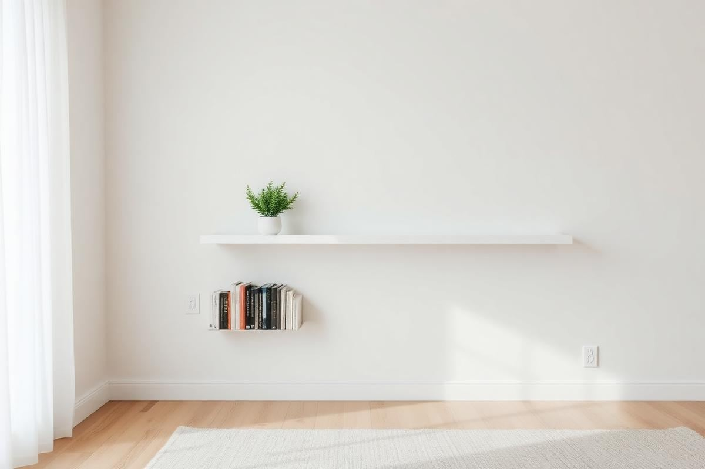

DIY Shelving Projects You Can Finish in a Day

DIY Shelving Projects You Can Finish in a Day is one of those topics where a little planning goes a long way. In this guide I walk through the process we use in real homes — not just what looks good in a photo, but what actually holds up over time.
Start here
Before you buy or move anything, measure the space and note how you actually use it. The best-looking room is one that matches how you live, so start with the routines: where you sit, where you drop keys, where the light falls in the afternoon.
The essentials
Focus on the pieces that do the most work. Get those right and the rest of the room comes together with much less effort. Aim for materials that patina rather than degrade, and colors you will still like in five years.
- Choose one clear focal point per room.
- Pick materials that improve with age.
- Layer textures instead of adding more colors.
- Leave visual breathing room — negative space is a design element.
Common mistakes
The mistakes we see most often are matching everything too tightly, over-scaling accessories, and skipping proper lighting. Fix those three and most rooms improve overnight.

Project 1: The Invisible Floating Ledge
The floating ledge shelf offers a minimalist aesthetic, perfect for displaying small art, photos, or even spices in a kitchen. This project focuses on simplicity and clean lines. We're aiming for a seamless look, so precise measurements are critical. For a standard 24-inch wide ledge, you'll need one piece of 1x4 pine or poplar lumber, cut to 23.5 inches. Pine is cost-effective at around $5-7 for an 8-foot board. You’ll also need two 4-inch heavy-duty floating shelf brackets (approx. $15-25 for a pair), suitable for drywall or stud mounting. A stud finder, a level, a drill, 2-inch wood screws, and drywall anchors if not hitting studs are essential. For finishing, consider a natural wood stain or a white semi-gloss paint, which will add about $10-15 to your material cost. The beauty of this design lies in its understated support, making the shelf itself the focal point.
Step-by-Step Installation
- Cut your lumber to desired length (e.g., 23.5 inches for a 24-inch shelf). Sand all surfaces smooth with 120-grit, then 220-grit sandpaper.
- Apply stain or paint, allowing adequate drying time for all coats.
- Mark bracket positions on the wall using a level. Aim for 18-20 inches apart for a 24-inch shelf for optimal stability. Use a stud finder or drywall anchors.
- Pre-drill pilot holes for the brackets, then screw them securely to the wall.
- Carefully slide the finished shelf onto the brackets. Ensure a snug fit. If it's loose, you might need to add a small shim or apply a thin line of construction adhesive to the top of the bracket for security, but this should be flush.
Project 2: Modular Plywood Cube Shelves
Plywood cube shelves are incredibly versatile, offering storage with architectural flair. They can be stacked, arranged, or even mounted individually. We'll build a single 12x12x12-inch cube. You'll need one 2’x4’ sheet of 1/2-inch birch plywood, which costs around $25-35. This sheet is enough for two cubes with minimal waste. Essential tools include a circular saw or jigsaw (for accurate cuts), a measuring tape, wood glue, 1.25-inch brad nails (a brad nailer is highly recommended for speed and clean finish), and clamps. For finishes, spray paint offers a quick, even coat for about $7-10 per can, or a simple polycrylic clear coat for around $12. This project tests your cutting precision but rewards you with highly customizable storage.
Cutting List for One Cube
- Two pieces at 12" x 12" (top/bottom)
- Two pieces at 11" x 12" (sides)
- Two pieces at 11" x 11" (front/back – if you want a back panel)
Note: The 11-inch sides assume the 12-inch top and bottom will sandwich them, maintaining overall 12-inch height. If no back panel, ensure your side pieces are 12 inches to maintain a true cube shape during assembly. Sand all cut edges to remove splinters and prepare for finishing.
Project 3: Industrial Distressed Pipe & Wood
For a robust, industrial aesthetic, iron pipe and distressed wood shelving is a standout. This project focuses on a single 3-foot long shelf. You’ll need one 1x10 pine board, cut to 36 inches ($8-12). For the pipe components, you’ll need two 1/2-inch black iron floor flanges ($4-6 each), two 1/2-inch black iron nipples (6-8 inches long, $3-5 each), and two 1/2-inch black iron caps ($2-3 each). The total for pipe fittings is roughly $20-30. Tools include a drill, level, measuring tape, 1.5-inch wood screws, and four 2-inch heavy-duty lag screws with anchors (if not mounting directly into studs). To achieve the distressed wood look, a wire brush, sandpaper (80-grit), dark wood stain ($10-15), and a clear satin polyurethane coat ($12-15) are necessary. This isn't just a shelf; it's a statement piece that adds character.
Preparing Your Distressed Wood
- Cut your 1x10 board to 36 inches. Lightly distress the surface by dragging a wire brush along the grain, creating subtle grooves. Don't overdo it.
- Sand the entire board with 80-grit sandpaper to soften any sharp edges and prepare for staining.
- Apply a dark wood stain liberally, then wipe off excess after 5-10 minutes for desired depth. Allow to dry completely (4-6 hours).
- Apply 2-3 coats of satin polyurethane, lightly sanding with 220-grit between coats for a smooth, protective finish. Dry time for polyurethane is typically 2-4 hours per coat.
Project 4: Upcycled Drawer Shelves
Transforming old drawers into charming wall shelves is a brilliant sustainability hack. This project involves a medium-sized drawer, roughly 18-24 inches wide, 10-12 inches deep, and 4-6 inches high. Thrift stores or antique shops are ideal hunting grounds, often yielding drawers for $5-15. Look for solid wood construction for durability. You'll need two heavy-duty D-ring hangers or French cleat hardware (around $8-15) for secure mounting. Other materials include wood filler ($5-8), sandpaper (120 and 220-grit), a primer ($10-15), and paint (spray paint or leftover interior paint works well, another $7-15). A drill, level, and measuring tape are basic tools. This project is about creative vision and giving new life to forgotten pieces, often resulting in unique conversation starters.
Revitalizing Your Found Drawer
- Inspect the drawer for any loose joints or damaged areas. Use wood glue and clamps to reinforce any weak points, allowing ample drying time (2-4 hours).
- Fill any nicks, scratches, or old hardware holes with wood filler. Once dry, sand smooth with 120-grit, then 220-grit sandpaper over the entire drawer.
- Clean the drawer thoroughly. Apply an even coat of primer. Allow to dry (1-2 hours).
- Paint the drawer in your desired color. Two thin coats are better than one thick coat. Let dry completely (2-4 hours per coat). For a chic look, consider a contrasting color for the interior.
- Attach D-ring hangers to the back top corners of the drawer, ensuring they are level. Alternatively, install a French cleat for heavier items. Mount securely to wall studs or use appropriate anchors.
Advanced Finishing Techniques
Elevate your DIY shelves from functional to fashionable with considered finishing. Beyond basic paint or stain, techniques like whitewashing, liming, or even a faux-aged patina can transform your project. For a convincing whitewash, mix 1 part white latex paint with 2 parts water. Apply with a brush, then immediately wipe with a clean rag to control opacity. This creates a soft, beachy feel, costing minimal extra beyond your initial paint purchase. For a liming wax finish (approx. $15-20 for a small pot), apply a thin layer with a cloth, working it into the grain, then wipe off excess. This highlights wood grain beautifully with a subtle, pale effect. These techniques add character and visual texture, making your shelves look professionally crafted rather than merely assembled.
Troubleshooting Finishing Flaws
- Runs and drips: Usually caused by applying too much product at once. Catch them immediately with a brush or rag. If dry, sand lightly with 220-grit and reapply a thinner coat.
- Uneven stain: Often due to poor wood preparation (skip sanding steps) or inconsistent application. For light spots, apply another thin layer of stain. For dark spots, try a stain-reducing agent or sand them out if minor.
- Orange peel texture (paint): Happens with thick paint or improper spray technique. Sand smooth with 320-grit sandpaper and apply a very thin, even final coat, or use a paint additive to slow drying time for a smoother finish.
Remember, practice on scrap wood before committing to your finished piece. Patience is key to achieving a flawless finish that truly enhances your efforts. A well-finished shelf not only looks better but also protects the wood, extending its lifespan.
Key takeaways
- Match the room to how you actually live.
- Anchor with one main piece and clear lighting.
- Layer textures, not colors.
- Leave breathing room around every object.
Frequently asked questions
Where should I start?
Start with the largest piece and the light. Everything else — art, textiles, small objects — is easier to place once those two anchors are set.
What is a realistic budget?
Prioritize the pieces you touch every day. Spend more on those and less on decorative items, which are easy to swap over time.
How long should this last?
A well-chosen main piece should last 10–15 years. Refreshes come through textiles, art, and accessories, not full replacements.

Sophia Bennett is a certified interior stylist and the senior editor at Styleire. She has spent more than eight years helping homeowners and renters create warm, functional interiors, with hands-on experience across small city apartments and family homes. Her work has been informed by close collaboration with independent designers, craftspeople, and product testers.
View full profile →Related reading

Open Kitchen Shelving: When It Works, When It Doesn't
Open shelving looks great in photos. In real kitchens, it is a lifestyle choice, not a style choice.

DIY Wall Art Ideas That Don't Look DIY
You don't need to paint to make wall art. Some of the best DIY pieces are almost entirely assembly.

Upcycling Furniture Basics: A Beginner's First Project
Your first upcycle should be a small piece with good bones. Here is how to do it right the first time.